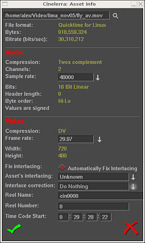

| [ << ] | [ >> ] | [Top] | [Table des matières] | [Index] | [ ? ] |
On accède aux effets, transitions, clips, et objets à cet endroit. La plupart des ressources sont insérées dans le projet en les glissant depuis la fenêtre des ressources. La gestion de l'allocation des ressources est aussi effectuée à cet endroit.
La fenêtre des ressources est divisée en deux parties. La première partie comporte une liste de dossiers et l'autre zone le contenu de ces dossiers. Aller dans la liste des dossiers et cliquer sur un dossier mettra à jour la zone du contenu avec le contenu de ce dossier.
La fenêtre des ressources
Le dossier et son contenu peuvent être affichés sous forme d'icônes ou de liste textuelle.
Un clic droit dans le contenu d'un dossier affichera un menu contextuel avec les options de formatage. Choisissez Afficher sous forme de texte pour obtenir une liste textuelle. Choisissez Afficher sous forme d'icônes pour afficher les vignettes ou les icônes correspondant au dossier choisi. Choisissez Trier les entrées pour trier alphabétiquement le contenu du dossier.
La fenêtre d'information de l'objet affiche des informations détaillées sur le fichier de média sélectionné. Pour y accéder, allez dans le dossier de gestion des objets et faites un clic droit sur l'étiquette ou sur l'icône du fichier qui vous intéresse. Un menu apparaît alors. Cliquez sur l'entrée Info de ce menu.

La fenêtre d'information sur l'objet
| [ << ] | [ >> ] | [Top] | [Table des matières] | [Index] | [ ? ] |
This document was generated on le 11 Février 2016 using texi2html 1.76.